My Work
My work is driven by both abstraction and medium. Take a look at the way I have explored various mediums.
Drawings:
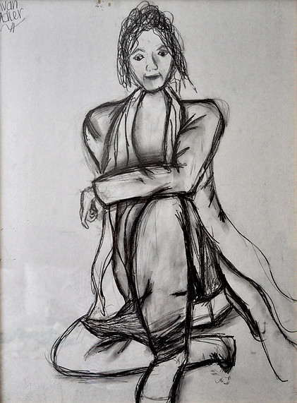


 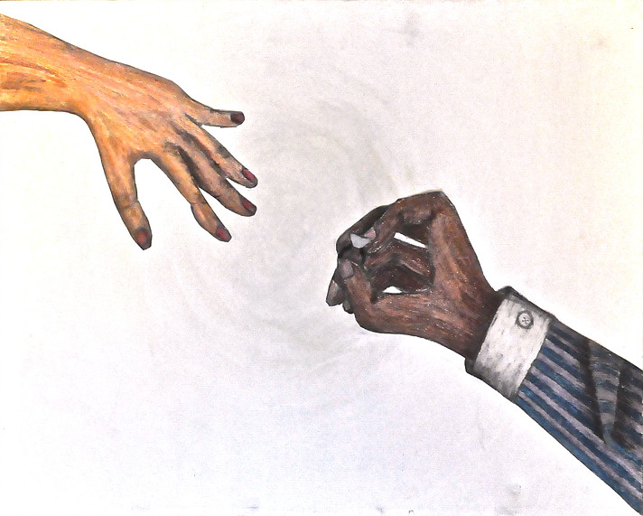
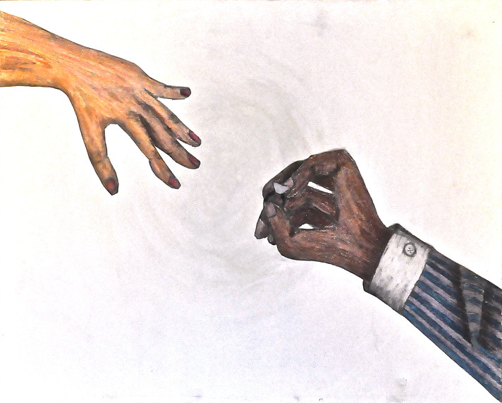
 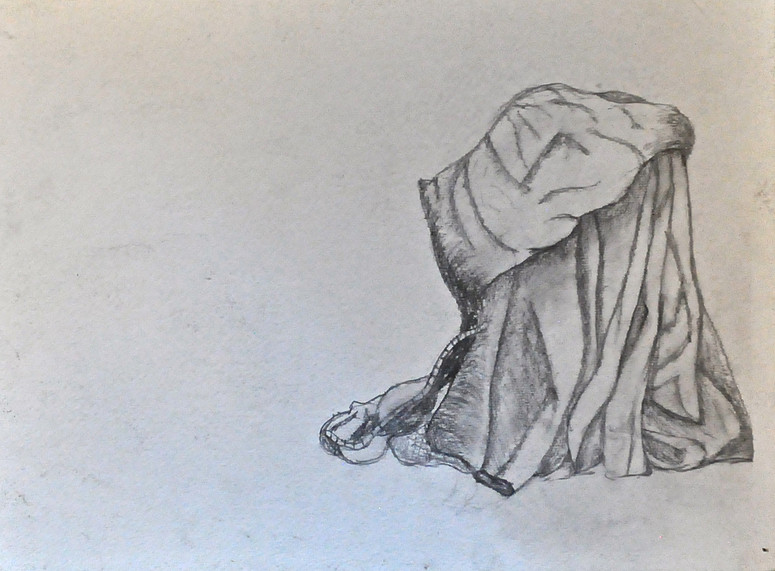
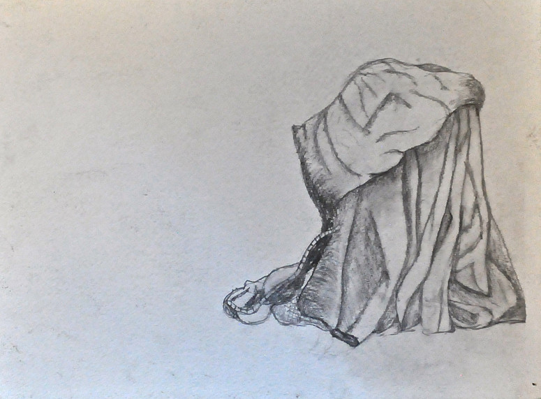
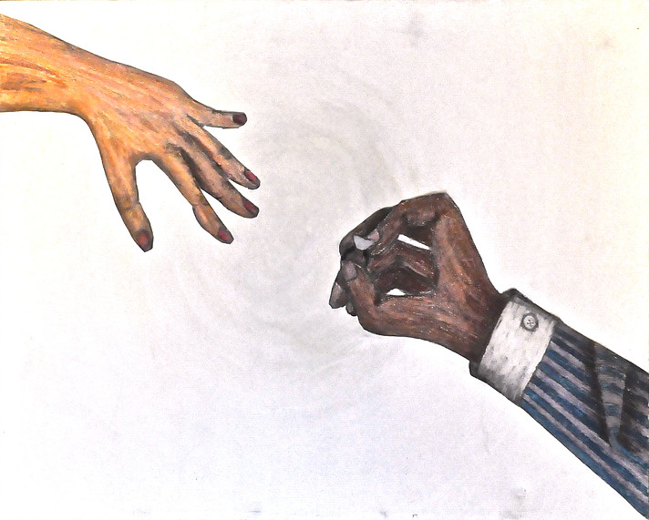
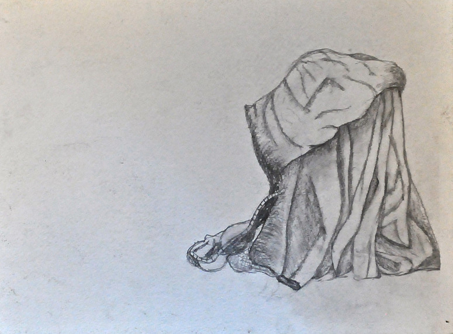
Paintings:
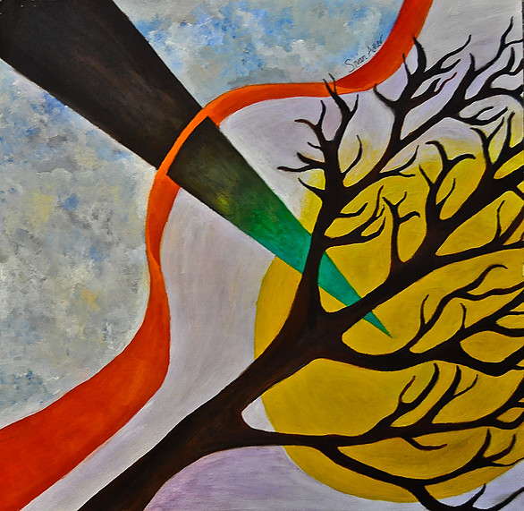
 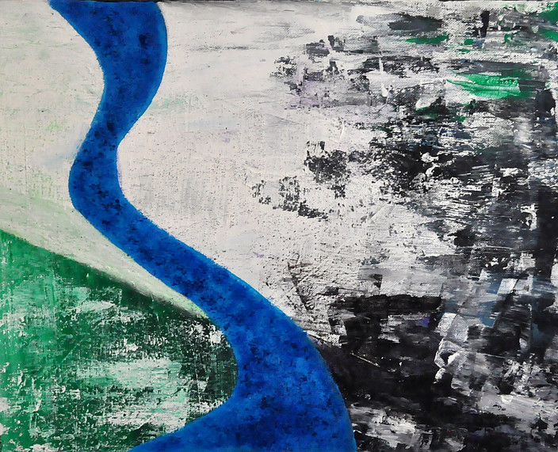
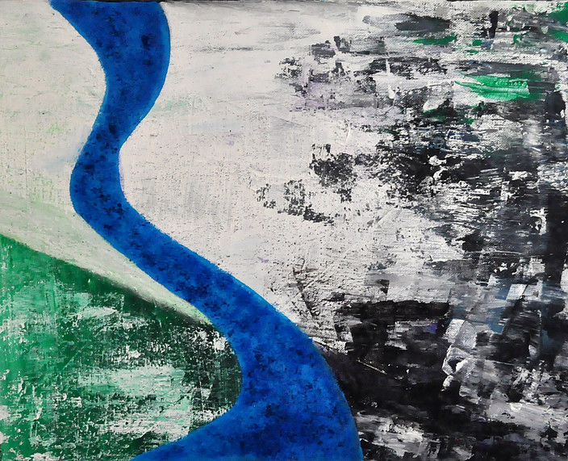
 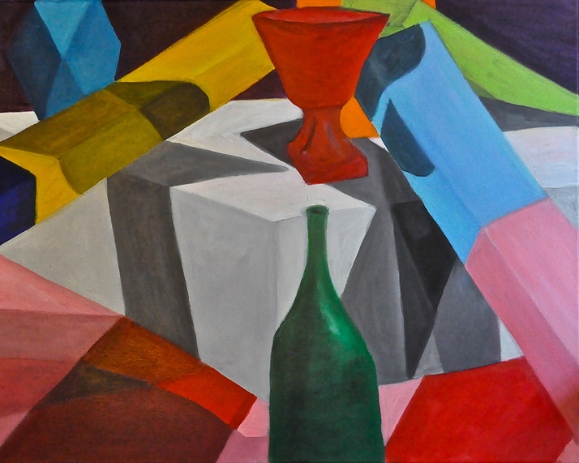
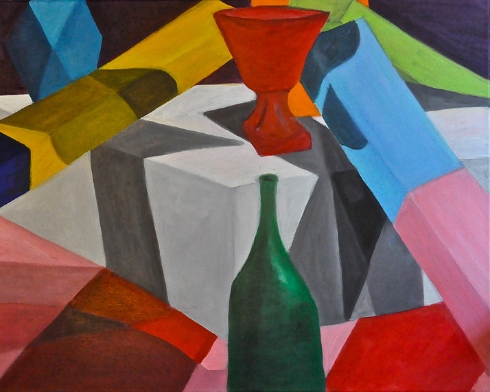


 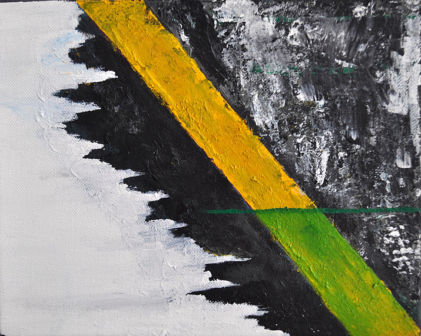
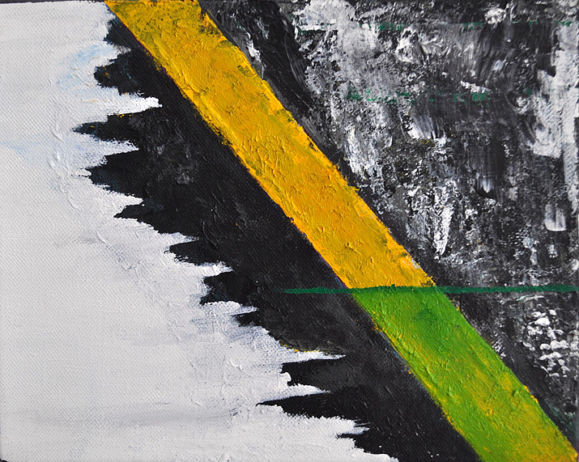
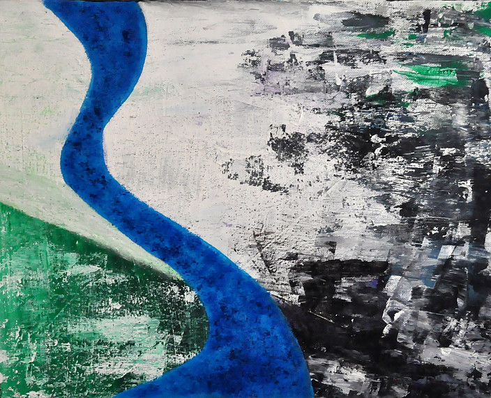
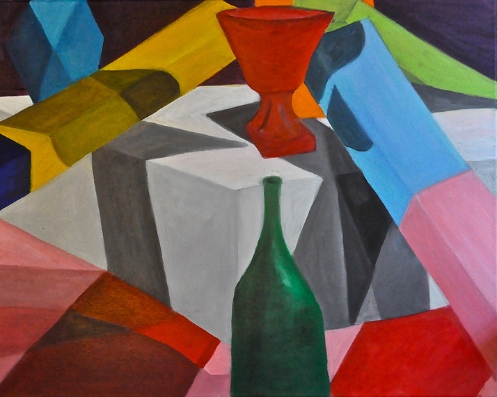
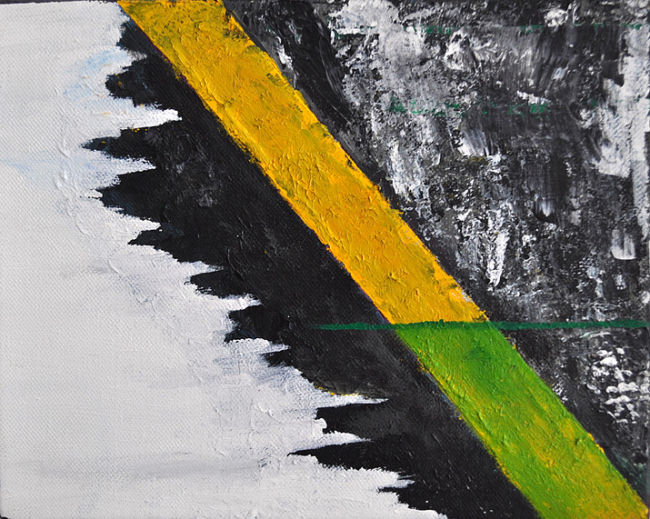
Design Exhibition for the Wyman Institute for Holocaust Studies:
I created a ten-poster exhibit for the Wyman Institute for Holocaust Studies. The purpose of the project was to create an exhibit that commemorated the 50th anniversary of the St. Louis Ship during WWII. The ten-poster exhibit was displayed at events around the country that commemorated this moment of history. I gathered the Institutes text and images to create a graphically cohesive exhibition of informative and interesting information.
For more information on the Wyman Institute for Holocaust Studies, visit their website: http://new.wymaninstitute.org
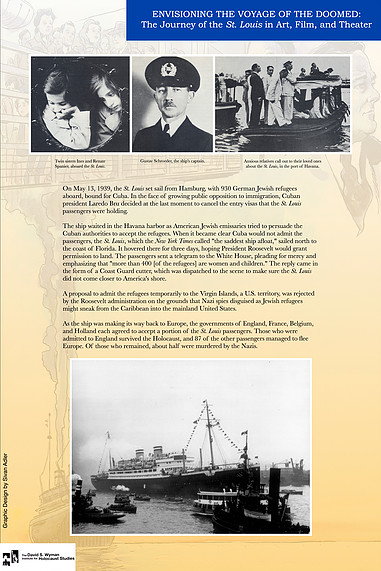
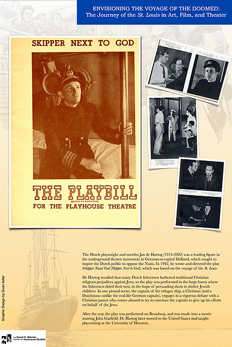
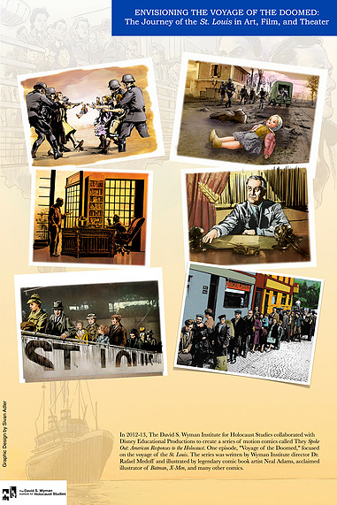